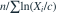
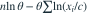

总体密度  ，x>c，c已知、θ>0。θ 的 MLE 为？
，x>c，c已知、θ>0。θ 的 MLE 为？
，x>c，c已知、θ>0。θ 的 MLE 为？- A
- B
- C

- D

我已思考，展开答案与解析
正确答案：D
- 对数似然中与θ有关的部分为

。令导数为零即得。
易错提醒先明确分布参数、独立性和统计量的定义，再进行计算。
南审 813 · 2021 · 第1页 二·2(1)；从大题提取考点并重写为单选
单选改编；题干与选项已重新编排
查看参考来源
，x>c，c已知、θ>0。θ 的 MLE 为？

。令导数为零即得。南审 813 · 2021 · 第1页 二·2(1)；从大题提取考点并重写为单选
单选改编；题干与选项已重新编排
查看参考来源